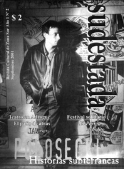

Buscar
Polosecki: Ciudad Abajo
En un formato imposible, con un indecible talento y mezclando mil silencios, Fabián Polosecki le aportó a la televisión una mirada revolucionaria. Un periodismo que escucha, sin ansiedad, historias jamás contadas...
Edición N° 2
Septiembre 2001
Revista bimensual
Comprar edición impresaSumario
- Polosecki: Ciudad Abajo
- Tristeza não tem fin
- Hoy y siempre: Django Reinhardt, guitarra y jazz para tres dedos
- Iorio: Industria Nazional
- La perla negra de Aramis Rigatuso
Compartir Articulo
Poco antes de morir, Osvaldo Soriano reconoció que tenía intenciones de escribir una novela que sólo transcurriera de noche, en Buenos Aires. "La idea es metaforizar eso: trabajar algo absolutamente nocturno. Esa trama me sacaría de encima numerosos problemas, ya que de noche el mundo se restringe mucho. (...) Es un mundo de novela policial.
Difícilmente se puedan encontrar personajes convencionales", explicaba Soriano sobre su proyecto, finalmente frustrado por la muerte. Pero la idea quedó colgada del tiempo y fue recogida por otras manos, en otro formato. El periodista Fabián Polosecki, quizá de forma inconsciente, tomó la posta dejada por el escritor y se lanzó a escribir su novela nocturna.
El resultado fue una bellísima saga de historias subterráneas que golpeó los televisores de muy pocos argentinos en unos años negros para la creatividad en ese bastardeado formato. Negro, como esa noche que Soriano y Polosecki entendían como parte intransferible de su entorno, como el escenario natural para sentarse y ensayar historias de la nada, del suburbio, de la gente nocturna como ellos.
La aparición del programa de Polosecki a principios de los 90 en la televisión argentina representó algo más que una bocanada de aire fresco, fue la definitiva imposición de un mensaje inédito, desconocido, limitado hasta entonces a las fronteras de la temática policial. Esa nueva mirada, que se instauró a partir de «El otro lado», era la de historias que estaban allí, casi ocultas, en las calles de Buenos Aires, y que ya no aguardaban el arribo de descubridores de ningún tipo. En la perspectiva de Polo, un ciego alcanzaba la misma trascendencia que una estrella de cumbia o un peleador de Titanes en el Ring. La mirada Polosecki se encargó, justamente, de correr la luz y de enfocar esas miles de historias escondidas de ladrones, de ciegos, de gitanos, de trabajadores; todos personajes de reparto para el entonces creciente negocio de la televisión privatizada. Y el fenómeno surgió, como gigantesca paradoja, en el símbolo máximo de la decadencia televisiva: en 1992, y en el canal estatal ATC de Gerardo Sofovich.
La idea nunca fue romper, pero la entrada de ese mensaje novedoso no pasó desapercibido: mientras los periodistas cobraban más protagonismo que sus entrevistados, Polosecki ofrecía entrevistas extensas, arduas, donde su voz se perdía en el relato del otro, porque era el otro el que verdaderamente tenía algo para contar. Cuando la televisión era sólo campo fértil para famosos y personajes de efímera relevancia, «El otro lado» primero y «El visitante» después, se encargaron de ponerle un micrófono a desconocidos, a marginales, a gente de a pie. Justo en momentos en que la calidad de un producto televisivo parecía incapaz de alcanzar un mínimo nivel de exigencia artística, de esfuerzo creativo; el proyecto de Polosecki creció con los meses y terminó ejecutando secuencias antológicas, que aún perduran en la memoria selectiva de muchos (y pocos a la vez) que iban encontrando por azar su programa, que tenía un carácter marginal hasta en su día y horario de emisión: los viernes a las once de la noche. A los personajes les caía bien el horario, incluso les daba un grado mayor de intimidad ante las escasas preguntas de Polo; muchas veces no se notaba que los entrevistados fuesen concientes de que estaban siendo registrados para un programa de Canal 7, y eso era lo que podía generar Polo por su carisma y trato con las personas.
"El mundo es lo que cada uno ve del mundo. Si en este momento te invito a caminar, vos vas a ver algunas cosas por la calle, y yo, seguramente, veré otras.
La tele es así también: lo que muestres y la manera en que lo muestres refleja tu perspectiva del mundo, y ésa es siempre una cuestión ideológica", señaló Polosecki. Esa decisión ideológica de trasladar vivencias cotidianas de gente común a la pantalla chica dejó una larga estela que, años después, cosechó numerosas experiencias similares, aunque con disímiles resultados. Pero el indudable puntapié inicial lo dio ese periodista de treinta y pico de años, que trabajó en Radiolandia entrevistando figuritas de la farándula, que admiraba el trabajo de Enrique Sdrech, que se desesperaba cuando se quedaba desocupado y que se metió de contramano y sin luces en las calles de la ciudad. Para lograrlo, se rodeó de colaboradores de distinta procedencia: desde un escritor y guionista de historietas como Pablo de Santis, hasta directores de cine independiente como Pablo Reyero, responsable del documental Dársena Sur cuyo escenario es el entorno del Polo Petroquímico de Dock Sud (con una estética muy Polosecki, por cierto).
La estructura de sus programas carecía de rebusques: en «El otro lado», la partida era la necesidad de historias de un frustrado guionista de historietas; y en «El visitante», el protagonista sufría una extraña enfermedad que lo obligaba a peregrinar sin pausa por la ciudad. "Hay algo peor que la angustia de la página en blanco. Algo peor que no tener ninguna historia que contar: es haber oído demasiadas, y no poder olvidarlas...", así comenzaba el programa. Con esos revulsivos, la cámara de Polo se trasladaba, semana a semana, a chocarse con historias sensacionales.
Los finales de cada programa eran memorables, porque muchas veces permitían terminar de entender algunas ideas que no cerraban de cada protagonista. Basta recordar al ciego que reconocía como por las mañanas, cuando despertaba, abría lo ojos y quería ver, quería terminar con la oscuridad del sueño y cambiar a la luz del día. Cómo olvidar los gritos de aquel loco militar retirado, la confesión avergonzada de un cuidador sobre sus fantasías con un Aberdeen Angus o el programa dedicado a los integrantes de Titanes en el Ring.
Aquel programa en particular dejaba una sensación de tristeza, mostraba con crudeza la decepción que provoca chocarse con la verdadera vida de esos personajes mágicos que tenemos como ídolos en la infancia. Pero era así, Polo llevaba a los espectadores a reconocer esas sensaciones primarias y generaba en los entrevistados una química, por momentos depresiva, pero siempre llegando al interior de sus vidas. Tampoco resulta fácil de olvidar el premonitorio diálogo con ese maquinista que señaló la estación de Santos Lugares como el lugar perfecto para un suicida, sin saber que Polo seguiría su recomendación tres años después.
Es verdad que hoy día, la realidad de Polosecki se mezcla demasiado con una leyenda que fueron escribiendo muchos (pocos) de sus seguidores. Es posible que la dificultad para conseguir las cintas de todos sus programas alimente la fantasía y lo rodee de una especie de áurea misteriosa. Quizás también la decisión de terminar con su vida lo haya separado un poco del rigor periodístico a la hora de escribir sobre él. Pero nadie podría dudar jamás de esa mirada revolucionaria que agrietó las paredes de la televisión en los 90, que empezó a mostrar otra forma de reflejar historias, y que terminó por motivar a muchísimos a intentar adoptar ese mensaje, a transformarlo y a reproducirlo.
Su trabajo fue algo nuevo, tan simple y tan extraordinario como eso. La noche, metafórica y literalmente, fue su entorno natural. Sus criaturas permanecen todavía allí, como esperando otra vez aquella breve oportunidad de contar su historia ante oídos atentos, respetuosos, nocturnos...
(El siguiente es un fragmento de la entrevista a Polo realizada por Verónica Abdala y Cecilia Bembibre, publicada en Página/12 el 17 de diciembre de 1995. En la charla pueden percibirse con nitidez los principales rasgos de la personalidad del periodista)
(...) Polo baja la escalera en cuero, apenas vestido con un jean gastado, descalzo. Los ojos rasgados aún más rasgados. Recién se levanta. Ahora está ahí, muerto de sueño en medio del comedor. Saluda y se sienta en una silla alta de madera y hierro con las piernas colgándole del respaldo. Busca los cigarrillos y ceba un mate amargo.
-Nuestro programa ni hace denuncias periodísticas rigurosas ni grandes investigaciones, simplemente convierte las cosas de la vida cotidiana en un formato televisivo. Y se hizo así, sin plata, sin la menor idea de lo que iba a ser, pero poniendo todo lo mejor que teníamos. No sé si va a seguir el año que viene: tengo ganas de hacer otras cosas además de la televisión, porque no todo cabe en esa estructura. Las mejores cosas no salieron al aire, y es obvio que uno apuesta a tratar de convivir todo el tiempo con las mejores cosas, ¿no? No tengo miedo de que el programa termine. Yo no quiero ser un artista en el sentido de tener la necesidad de un público para vivir, no puedo orientar mi vida al hecho de que siempre haya alguien ahí para aplaudirme. Me parece una vida muy dura, muy sacrificada.
Yo no siento haber llegado a ningún lugar en particular, ni creo saber algo importante, ni estar detenido.
Se trata de hacer tus cosas como salen. Nunca busqué hacer carrera en televisión. Cuando no tenía laburo, simplemente no tenía laburo. Cuando conseguí, lo agarré y lo hice lo mejor que pude. He visto señores en televisión que se aflojan la corbata, se meten en la villa y creen que así demuestran su pluralismo, su tolerancia. A mí me produce risa. Mi estilo tiene que ver con la gente con la que yo estoy. La gente puede hacer cosas parecidas a las que hago yo, no me jode para nada, pero te causa gracia cuando te das cuenta de que no es auténtico. Sabiduría popular: ésa es la historia.
Después de períodos de mucha actividad suelo tener depresiones fuertes. Yo sin laburo me pongo muy nervioso. Me pongo mal. Y ojo que no estoy hablando solamente de laburo remunerado: el concepto de idea burgués. Pero me parece que hay un modo de vida burgués, que no es lo que yo quiero. Lo que digo no tiene que ver con el dinero, sino con la no aventura.
¿Te interesa la política?
Sí -responde rápido y hace un largo silencio-. Yo siento que hago política con mi programa. Yo, trabajando, ejerzo un poder, pongo mis capacidades al servicio de todos. No me interesa la política de los profesionales, me interesa ésta. Porque yo estoy a favor del desarrollo y del progreso pero me parece imperdonable que se plantee un modelo de vida que excluye a la mayoría. La gente está angustiada, putea, porque los que tienen las palancas no parecen tener buenas intenciones: hay muchas cosas que se hacen por interés, por ambición desmedida, y eso es muy jodido.
(...) Esa es la sensación que tengo del poder. Me da miedo. A veces me desespero, tengo crisis de odio, de rencor. Hay que estar despierto, preparado, y vivir a tope con la gente que uno quiere. Divertirse y comprometerse realmente con lo que uno hace. Esto en algún momento tiene que cambiar y no hay un solo camino, porque los problemas son tantos... Y es necesario que haya aportes distintos, de todos. Las cosas buenas surgen así. Estoy tratando de ver cómo se hacen las cosas bien. No tengo un modelo, un mensaje o una ideología, una figura o un discurso que diga esto es lo que puedo seguir yo. Además, me parece que se aprende en la praxis.
Mi idea del mundo deja que las personas puedan rotar en sus actividades, en donde el trabajo manual e intelectual se entiendan como una misma cuestión, donde no hay personas que piensan y organizan, y personas que obedecen y fabrican: que un tipo pueda hacer el trabajo pesado a la mañana, después al mediodía cocinarse, y a la tarde leer, escribir, y después barrer la vereda, y a la noche ser carpintero, y de trasnoche borracho, o jodón, o colectivero. Tengo ganas de vivir mil vidas.
(...) Podés estar muy pendiente del tiempo, que no es lo mismo que estar pendiente del reloj. Yo, por ejemplo, no sé qué hora es, ni me importa. Puedo imaginármelo porque conozco este lugar a la hora de la siesta, o porque tengo hambre, o porque sé que a esta ahora se juntan muchas personas en la verdulería... Todo lleva un tiempo: un tiempo de atención, de espera, un tiempo de maduración. La muerte implica un tiempo de dolor. No puedo entender a la gente que se queja diciendo: ¡Mirá la hora que es! ¿Cómo te vas a quejar de la hora?, o esa gente que se queja de la lluvia... la lluvia te da planes, porque te altera lo que tenías previsto hacer en el día. Y es muy jodido que no se te alteren los planes.
(La nota completa en la edición gráfica de Sudestada N°2)
Comentarios
Hugo Montero, Ignacio Portela
Articulos más vistos


LIBRERÍA SUDESTADA

Colección infantil

Distribuidora de Libros

Suscripción

Sudestada en URUGUAY

Otros articulos de esta edición
Iorio: Industria Nazional
Desde hace un tiempo Ricardo Iorio viene causando conmoción y estupor en la opinión pública y en el ambiente rockero. ...
Hoy y siempre: Django Reinhardt, guitarra y jazz para tres dedos
(Protegido por una coraza de madera y chapa de la más baja calidad que pueda existir, desafiando las catástrofes naturales ...
Tristeza não tem fin
El brasileño multifacético Vinicius de Moraes se consagró como dramaturgo, poeta, cantante, diplomático y crítico de cine, pero principalmente, musicalizó ...
 Humor
Humor